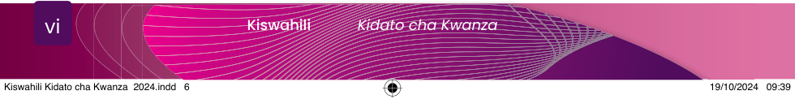

viVifupisho
DUCE
Dar es Salaam University College of Education
E
Kielezi
EAC
East African Community
H
Kihusishi
Hs
Kihisishi
MUCE
Mkwawa University College of Education
N
Nomino
SADC
Southern African Development Community
SQA
School Quality Assurance
t
Kitenzi kishirikishi
T
Kitenzi
TEHAMA
Teknolojia ya Habari na Mawasiliano
TET
Taasisi ya Elimu Tanzania
Ts
Kitenzi kisaidizi
U
Kiunganishi
UDSM
University of Dar es Salaam
UMISSETA
Umoja wa Michezo ya Shule za Sekondari Tanzania
UNESCO
United Nations Educational, Scientific and Cultural Organization
V
Kivumishi
W
Kiwakilishi
WEMA
Wizara ya Elimu na Mafunzo ya Amali